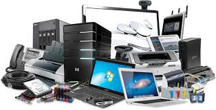

Hardware
 Hardware é todo componente físico, interno ou externo do seu computador, ou celular, que determina do que um dispositivo é capaz e como você pode usá-lo. Embora dependa de um software para funcionar (e vice-versa), o hardware é um elemento a parte e igualmente importante.
voltar